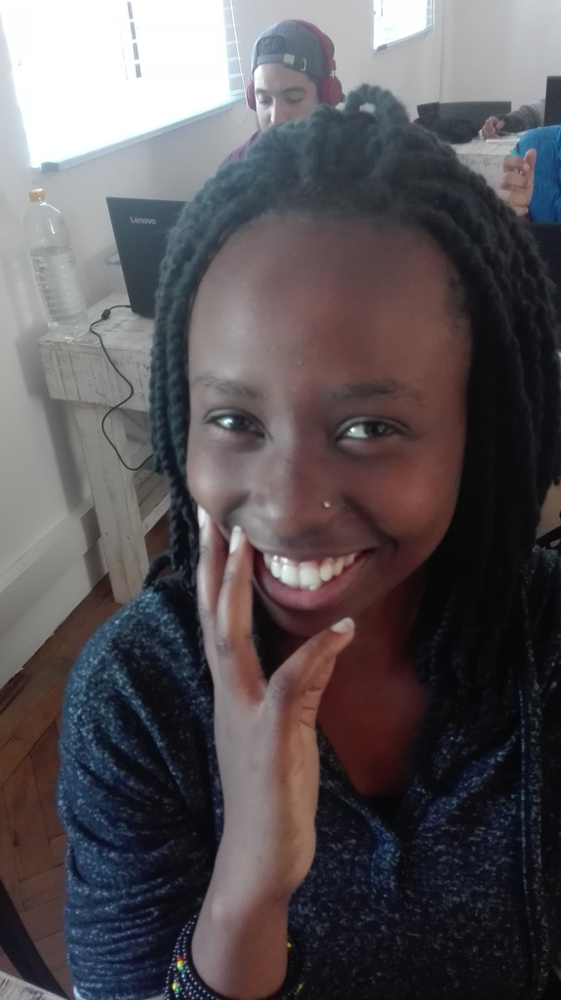

My name is John-Paul and I am an aspiring coder, but I also have a few hobbies which include playing rugby, playstation 4 and spending time with my friends. I enjoy taking long hikes and being in nature, keeping fit in the gym, going to the beach and I love food.

